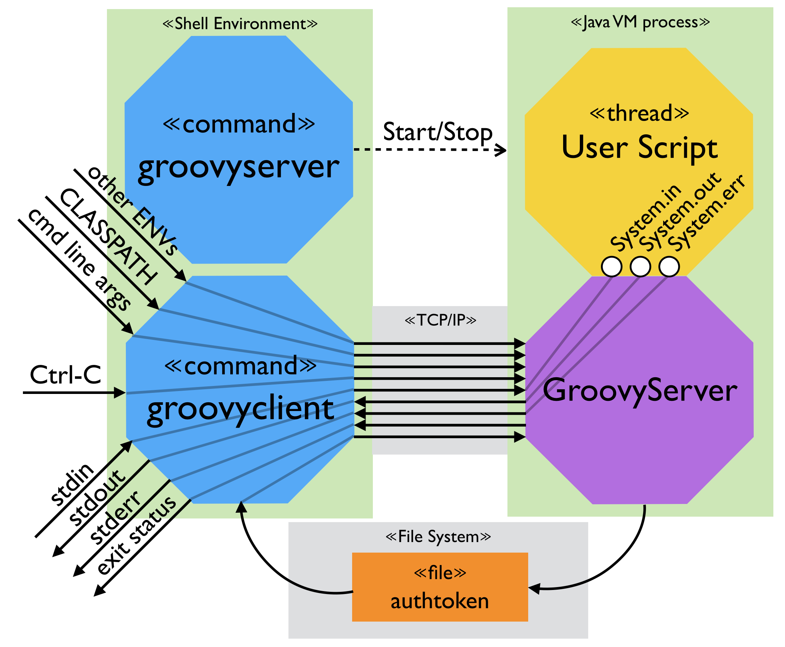

User Guide
Overview
GroovyServ reduces the startup time of JVM for Groovy significantly, by using a JVM process running in background. If you know gnuserv(gnudoit)/emacsserver/emacsclient, this is similar to them.

Requirements
GroovyServ needs the following programs Version of JDK/Groovy using at build is following:
- Java SDK 7+ (1.8.0_11 on build-time)
- Groovy (2.3.7 on build-time)
There are binary files for following environment/OS as default:
- Mac OS X
- Linux (amd64/i386)
- Windows 7+ (64bit/32bit)
But if you build the user commands written in Go language, you can use them anywhere. To build by yourself is required:
Command usage
Start/stop a server process
There are two ways to run a server process. The way is an implicit operation via a groovyclient command. If a server process isn’t running, the groovyclient automatically starts a server process up at the background:
$ groovyclient -v
Java home directory: /Library/Java/JavaVirtualMachines/current/Contents/Home
Groovy home directory: /Users/me/.gvm/groovy/current
Groovy command path: /Users/me/.gvm/groovy/current/bin/groovy (found at GROOVY_HOME)
GroovyServ home directory: /Users/me/groovyserv/current
GroovyServ work directory: /Users/me/.groovy/groovyserv
Original classpath: (none)
GroovyServ default classpath: /Users/me/.groovy/groovyserv/lib/*
Starting server..............
Server is successfully started up on 1961 port
Groovy Version: 2.3.7 JVM: 1.8.0_11 Vendor: Oracle Corporation OS: Mac OS X
GroovyServ Version: Server: 1.0.0
GroovyServ Version: Client: 1.0.0
The another way is using a groovyserver command:
$ groovyserver
For example, with -v/--vebose option, the verbose messages are written into a log file. It’s useful to analyze a problem about invoking server:
$ groovyserver -v
A -r/--restart option is handy because it can start a new server when there is no server process. When you want a server to be running, you can always use the option like:
$ groovyserver -r
Run a Groovy script
You can run a Groovy script by a groovyclient command instead of a groovy command. In most of cases, you can specify an one-liner script as a parameter of -e option:
$ groovyclient -e "println 'Hello, GroovyServ.'"
Hello, GroovyServ.
Or specify just a file path:
$ cat hello.groovy
println 'Hello from a file.'
$ groovyclient hello.groovy
Hello from a file.
Options
groovyclient
A groovyclient command accept all options of a groovy command. Besides, there are dedicated options of groovyclient, a name of which starts with -C. Those options are analyzed and consumed by groovyclient, and aren’t passed to groovy command:
-Ch,-Chelp show this usage
-Cs,-Chost specify host to connect to server
-Cp,-Cport <port> specify port to connect to server
-Ca,-Cauthtoken <authtoken> specify authtoken
-Ck,-Ckill-server kill the running server
-Cr,-Crestart-server restart the running server
-Cq,-Cquiet suppress statring messages
-Cenv <substr> pass environment variables of which a name includes specified substr
-Cenv-all pass all environment variables
-Cenv-exclude <substr> don't pass environment variables of which a name includes specified substr
-Cv,-Cversion display the version
-Cdebug display console log
groovyserver
Options of groovyserver command are as follows:
-h,--help show this usage
-k,--kill kill the running server
-r,--restart restart the running server
-q,--quiet suppress statring messages
-v,--verbose verbose output to a log file
-p,--port <port> specify port to listen
--allow-from <addresses> specify optional acceptable client addresses (delimiter: comma)
--authtoken <authtoken> specify authtoken (which is automatically generated if not specified)
--debug display console log
Access control
GroovyServ can reject an evil request from an evil client, by using two methods; authtoken and whitelist.
Authtoken
In GroovyServ, a request is authenticated by a simple authtoken mechanism.
- An authtoken is generated when a server process is started up and writes into the authtoken file.
- A
groovyclientreads the authtoken file when running, and then sends it as a part of a request to a server process. - A server process compares the authtoken in the request with the one the server having. If they weren’t matched, the request would be rejected.
You can also specify an authtoken as you want when starting a server process up, instead of generating automatically.
$ groovyserver --authtoken GROOVYSERV
Or:
$ groovyclient -Cauthtoken GROOVYSERV ....
Too simple authtoken might cause less security.
Whitelist of IP addresses
A server process allows a request only from a loopback address by default. However, you can allow an access between different computers at your own risk. See Remote accessing section.
Environment variables
Required/optional at runtime
GroovyServ uses the following environment variables at runtime.
HOME(required only on Linux or Mac OS X, namely UN*X-like OS)- It’s used to decide a working directory
$HOME/.groovy/groovyservwhich is used for logging and storing an authtoken. You need do nothing because it’s set by default on UN*X-like OS. USERPROFILE(required only on Windows)- It’s used to decide a working directory
%USERPROFILE%\.groovy\groovyservwhich is used for logging and storing an authtoken. You need do nothing because it’s set by default on Windows. JAVA_HOME(required indirectly)- It’s required for Groovy. Generally, it must be set by installing Groovy.
GROOVY_HOME(optional)- It’s used to specify a
groovycommand path. If you’ve set a path of agroovycommand intoPATH, you don’t have to setGROOVY_HOMEbecause GroovyServ can find the command viaPATH. PATH(optional)- It’s used to specify a
groovycommand path. If you’ve setGROOVY_HOME, you don’t have to set thegroovycommand path to PATH because GroovyServ can find the command viaGROOVY_HOME. CLASSPATH(optional)- In addition to some JAR files of GroovyServ itself, the values of a
CLASSPATHin which agroovyservercommand runs are applied to aCLASSPATHof a server process. It’s used for each an evaluation of a script as default classpath. Additionally, aCLASSPATHof a client process affects to a evaluation of a script on a server temporarily. See also Propagation of CLASSPATH section. GROOVYSERV_HOST(optional)- It’s used to specify the host address for client. Alternately, you can specify it as a command option.
GROOVYSERV_PORT(optional)- It’s used to specify the port number for server or client. Alternately, you can specify it as a command option.
GROOVYSERV_WORK_DIR(optional)- It’s used to specify the work directory at which GroovyServ uses to store an authtoken file and a log file. If not specified, the default paths are used. See Files section.
GROOVYSERV_LOG_DIR(optional)- It’s used to specify the log directory for a log file of a server process which is running with a
--verboseoptions. If not specified, the default paths are used. See Files section.
If you want to use GroovyServ on Cygwin, you should take care with the environment variables having a file path. GroovyServ cannot understand a “cygpath” format (e.g. /cygdrive/c/your/dir/path). So you should convert the value of environment variable to a Windows native path format, by a cygpath command. It’s a good idea to create an alias or a wrapper script.
Propagation of CLASSPATH
The values of a CLASSPATH in which a groovyclient command runs are automatically sent to a server process. And it’s dynamically set to the compiler’s configuration of a script specified by the client. A CLASSPATH of a server process is never modified. So, the temporary classpath doesn’t affect the next script evaluation because it’s reset on the tear-down phase of each script evaluation. This behavior is quite same as a groovyclient’s -cp option.
The propagation of CLASSPATH works temporarily only for a certain client running. So, variables added to a server are available only in a script of the client, and vanish from the server after the client terminates.
The order to search a class is the following:
CLASSPATHof a server-cp/--classpathoptions of agroovyclientCLASSPATHof a client
Propagation of environment variables
Like the prior seciton, CLASSPATH environment variable is propagated to a server process automatically and implicitly. But other environment variables are not so. So you must explicitly specify options -Cenv, -Cenv-all and -Cenv-exclude if you want to do so.
With -Cenv option of a groovyclient, you can send all environment variables of which a name includes the specified substring to a server process. The variables on the client process are sent to the server process, and they are set at the server newly or overwrite the values of existed variables.
When specifying the option -Cenv-all, you can send all environment variables of a groovyclient command to the server process. Additionally, with the option -Cenv-exclude, the variables of which a name includes specified substring are excluded.
For example, if you specify the option like:
-Cenv SUBSTRING
the set of environment variables which are sent to the server are determined by the following pseudo code:
allEnvironmentVariables.findAll {
it.name.contains("SUBSTRING")
}
Consider the combination of -Cenv, -Cenv-all and -Cenv-exclude like:
-Cenv SUBSTRING
-Cenv-all
-Cenv-exclude EXCLUDE_SUBSTRING
The result of the following pseudo code are sent to the server:
allEnvironmentVariables.findAll {
if (isSpecifiedEnvAll || it.name.contains("SUBSTRING")) {
if (!it.name.contains("EXCLUDE_SUBSTRING")) {
return true
}
}
false
}
The propagation of environment variables globally changes a server process. Namely, variables added to a server still remain after a client terminates. So if some clients are running simultaneously, an environment variable which a script of a client uses might be overwritten suddenly by another client
This feature is especially useful for a tool (e.g. IDE, TextMate, Sublime Text) which runs an external command written by Groovy, and which uses environment variables to pass parameters to the command.
Files
Log file
By default, logs of a server are written to the following file:
- Linux, Mac OS X:
$HOME/.groovy/groovyserv/groovyserver-<port>.log - Windows:
%USERPROFILE%/.groovy/groovyserv/groovyserver-<port>.log
If GROOVYSERV_WORK_DIR environment variable is set, its value is used as the path, instead. Or, if GROOVYSERV_LOG_DIR is set, it’s used even though GROOVYSERV_WORK_DIR is set or not.
Authtoken file
In GroovyServ, a request is authenticated by a simple authtoken mechanism. By default, the authtoken file is stored at:
- Linux, Mac OS X:
$HOME/.groovy/groovyserv/authtoken-<port> - Windows:
%USERPROFILE%/.groovy/groovyserv/authtoken-<port>
If GROOVYSERV_WORK_DIR environment variable is set, its value is used as the path, instead.
The file mode is set to 0600 in Linux, Mac OS X, etc., in order to avoid to steal an authtoken. But in Windows, the UN*X-like file permission doesn’t work. So, protect an access to the file appropriately in Windows if you needs.
Networking
Port number
A communication between a groovyclient command and a server process uses a TCP connection. Its port number is 1961 by default.
You can change the port number as you want.
-p/--portoption ofgroovyserver- It specifies a port number for a server process. When a server process starts up, it uses as a port to listen to a request from a client.
-Cp/-Cportoption ofgroovyclient- It specifies a port to connect to server. When a command operates a server process, it also specifies a port for the server process. Especially, when a server process starts up, it uses as a port to listen to a request from a client.
$ groovyserver -p 1963
....
Server is successfully started up on 1963 port
$ groovyclient -Cp 1963 -e "println 'Hello, GroovyServ.'"
Hello, GroovyServ.
You can also use GROOVYSERV_PORT environment variable instead of the options. It’s handy because it affects both of a groovyclient command and a server process.
$ export GROOVYSERV_PORT=1963
$ groovyserver
....
Server is successfully started up on 1963 port
$ groovyclient -e "println 'Hello, GroovyServ.'"
Hello, GroovyServ.
Remote accessing
GroovyServ allows a request only from a loopback address by default. However, you can allow an access between different computers at your own risk.
- Start a server process with
--allow-fromoption ofgroovyserverin a server computer. - Run a
groovyclientcommand with-Cs/-Chostand-Ca/-Cauthtokenoptions in a client computer.
For example, assume that a server computer’s IP address is 192.168.1.1 and the client computer’s one is 192.168.1.2. At first, you specify a client address to allow a request by --allow-from option of groovyserver:
[server]$ groovyserver --allow-from 192.168.1.2
You can specify multiple IP addresses of clients to --allow-from option with a comma as a delimiter.
You need an authtoken in the server:
[server]$ cat ~/.groovy/groovyserv/authtoken-1961
1fc05d8a-5b92-41f6-82ca-41e6a53470c1
The authtoken is very important for security. So, you should keep it secret and safe.
[client]$ groovyclient -Chost 192.168.1.1 -Cauthtoken 1fc05d8a-5b92-41f6-82ca-41e6a53470c1 -e "println('Hello from remote client.')"
Hello from remote client.
When running groovyclient with -Chost option, you cannot use options to control a server process in localhost like -Cr option.
Other stuff
Standard I/O streams via TCP/IP
System.out, System.in and System.err are used as normal, which are transported over TCP/IP and individually separated for each a request.
Until now, you’ve often seen the following example code. This example indicates the System.out.println() can write to a console in a client:
$ groovyclient -e "println 'Hello, GroovyServ.'"
Hello, GroovyServ.
Next, this is an example of System.err.println():
$ groovyclient -e "System.err.println 'This is an error.'"
This is an error.
An error message also shows as a standard error when an exception occurs:
$ groovyclient -e "notDeclaredVariable"
Caught: groovy.lang.MissingPropertyException: No such property: notDeclaredVariable for class: script_from_command_line
...
The message is written as a standard error. So, you can omit it like this in UN*X-like OS:
$ groovyclient -e "notDeclaredVariable" 2>/dev/null
Then, System.in is also available:
$ groovyclient -e "System.in.eachLine { println it * 2 }"
a # <-- input by user
aa # <-- output from server
b # <-- input by user
bb # <-- output from server
^C # <-- CTRL-C
You can interrupt the infinte loop of the script by CTRL-C. See Interrupt by CTRL-C section.
Exit code
An exit value of a groovyclient command is equivalent to a System.exit(status):
$ groovyclient -e ";"
$ echo $?
0
$ groovyclient -e "System.exit(1)"
$ echo $?
1
$ groovyclient -e "System.exit(123)"
$ echo $?
123
The exit code is 1 when an exception occurs like a normal Groovy:
$ groovyclient -e "notDeclaredVariable"
Caught: groovy.lang.MissingPropertyException: No such property: notDeclaredVariable for class: script_from_command_line
...
$ echo $?
1
So, you can use the exit code of a script to cooperate with other stuff like:
$ groovyclient -e "println new File('notFound.txt').text" 2>/dev/null || echo "ERROR: could not read"
ERROR: could not read
Dynamic CWD
A current working directory (CWD) of a groovyclient is dynamically applied to a server process for each a request. And an original CWD of a server process is restored when a request ends.
For example, a server process runs at /tmp/dir1/:
$ cd /tmp/dir1
$ groovyserver
If the dynamic CWD feature weren’t supported, a CWD of a server process would be fixed at /tmp/dir1. So, the following command would be failed:
$ cat /tmp/dir2/test.txt
Can you read me?
$ cd /tmp/dir2
$ groovyclient -e "println(new File('test.txt').text)"
...
Caught: java.io.FileNotFoundException: test.txt (No such file or directory)
...
But, GroovyServ actually works well expectedly:
$ cd /tmp/dir2
$ groovyclient -e "println(new File('test.txt').text)"
Can you read me?
This feature is very handy for a script, but it brings a side-effect. See also Cannot run concurrently for different working directories section.
Interrupt by CTRL-C
You can interrupt a running script in a server process with CTRL-C simply. When you send a signal by CTRL-C while a script is running, a thread of the script in a server process is certainly stopped.
If the main thread of a user script ignores interruptions, GroovyServ can’t stop it. For example, you can stop the following script expectedly because JDK’s Thread#sleep() is interruptable API:
while (true) { Thread.sleep 1000 }
On the other hand, the following script keeps working infinitely in background because GDK’s Object#sleep() ignores interruptions intentionally.
while (true) { sleep 1000 }
GroovyServ can stop any sub threads created from a main thread of a user script, even which aren’t interruptable like:
Thread.start {
while (true) { sleep 1000 }
}
Detoxication of System.exit()
When a script uses System.exit(), it causes only the end of a thread for the script. A server process is still alive after it.
Restrictions
There are some restrictions caused by issues or its architecture.
Cannot run concurrently for different working directories
You can’t concurrently run a script for different working directory in a server process. For example, when two Groovy scripts are concurrently invoked by using a sub-shell and a pipe, the error occurs:
$ ( cd /tmp/dir1; groovyclient -e "(1..3).each { println it }; sleep 3" ) | ( cd /tmp/dir2; groovyclient -ne "println line * 2" )
ERROR: could not change working directory
Hint: Another thread may be running on a different working directory. Wait a moment.
Instead, this for the same directory works well:
$ ( cd /tmp/dir1; groovyclient -e "(1..3).each { println it }; sleep 3" ) | ( cd /tmp/dir1; groovyclient -ne "println line * 2" )
11
22
33
You can also use multiple servers with different ports as a workaround.
$ ( cd /tmp/dir1; groovyclient -Cport 1963 -e "(1..3).each { println it }; sleep 3" ) | ( cd /tmp/dir2; groovyclient -Cport 1964 -ne "println line * 2" )
11
22
33
Global variables are request-globally shared
If the static variables are defined in the script or Groovy classes you run, they are defined on a GroovyClassLoader created for each a request. In this case, static variables aren’t shared because a class loader is individual.
On the other hand, if the static variables are defined by a system/bootstrap class loader, they are shared. For example, the values which you stored in System.getProperties() are shared among all scripts invoked on the server process:
$ groovyclient -e "System.setProperty('hello', 'Hello')"
$ groovyclient -e "println System.getProperty('hello')"
Hello
Groovy’s metaClass is also shared among different requests:
$ groovyclient -e "String.metaClass.hello = { println 'Hello' }"
$ groovyclient -e "'x'.hello()"
Hello
Console I/O
System.out, System.in and System.err are used as normal, which are transported over TCP/IP and individually separated for each a request. But System.console() cannot be used so far.
$ groovyclient -e "println System.console()"
null